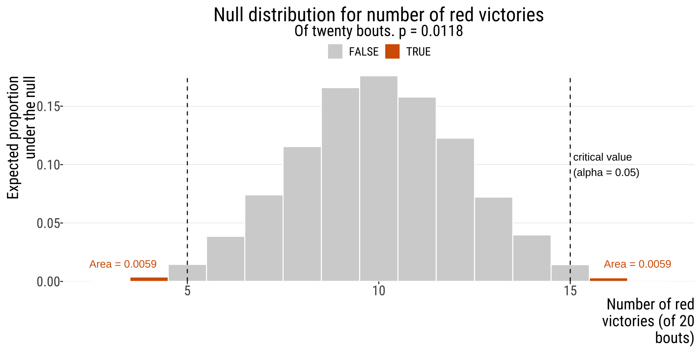
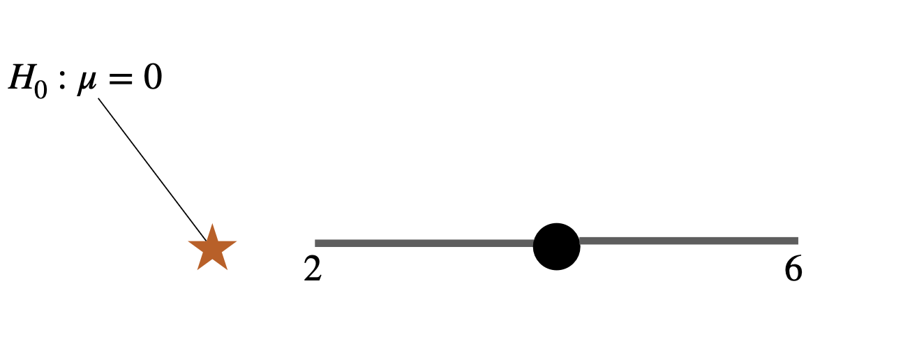
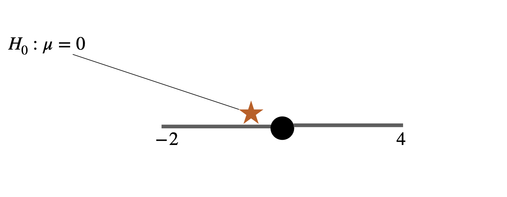
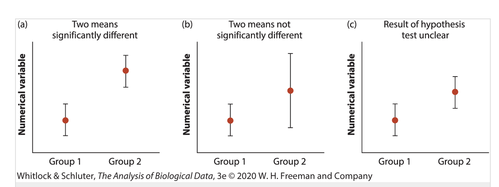
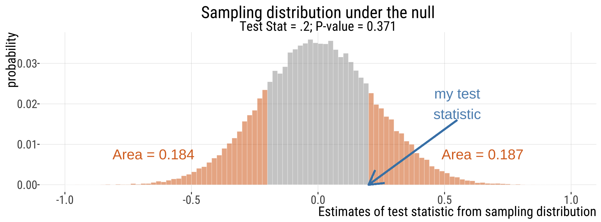
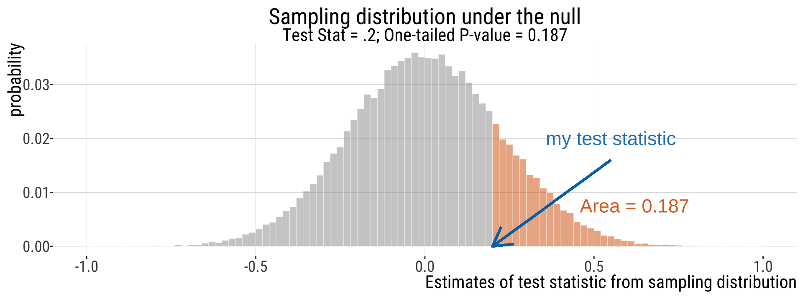
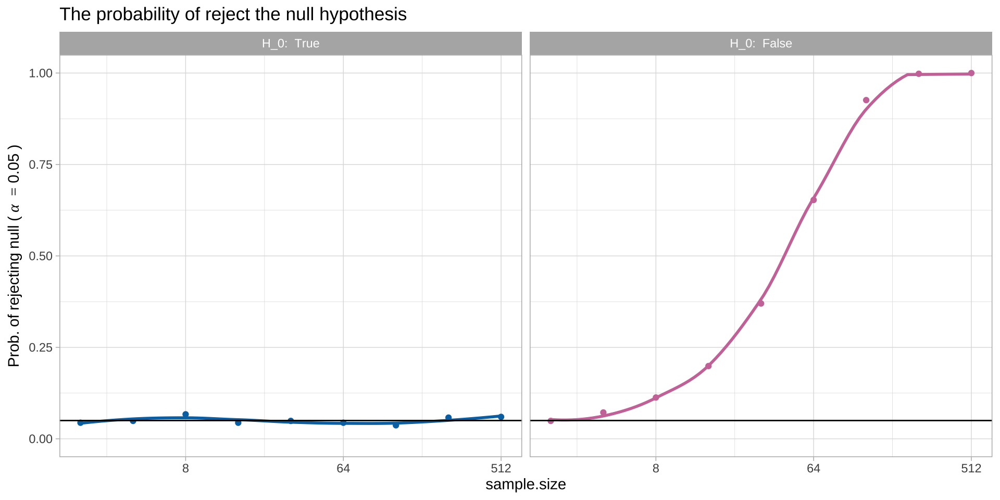
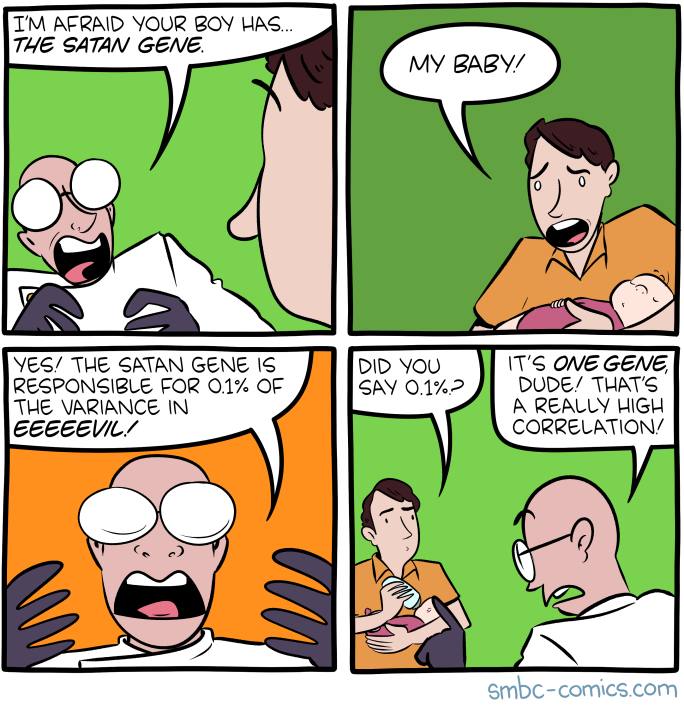
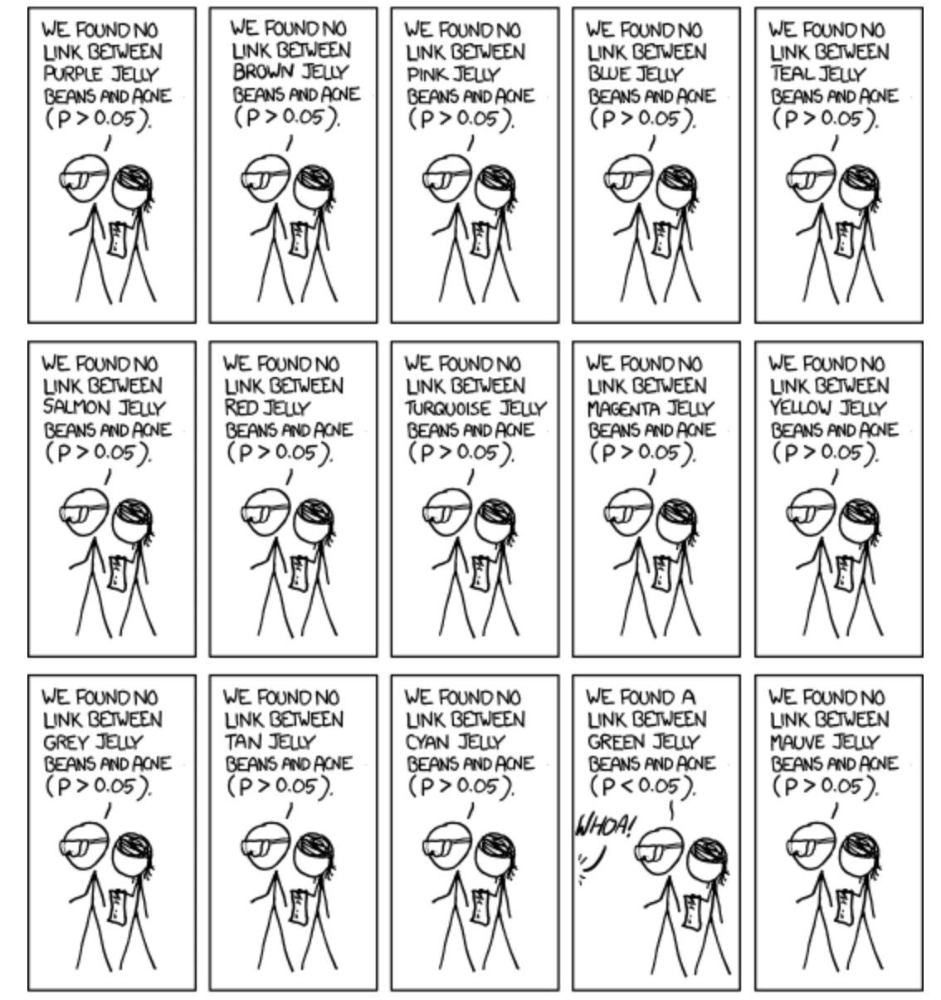
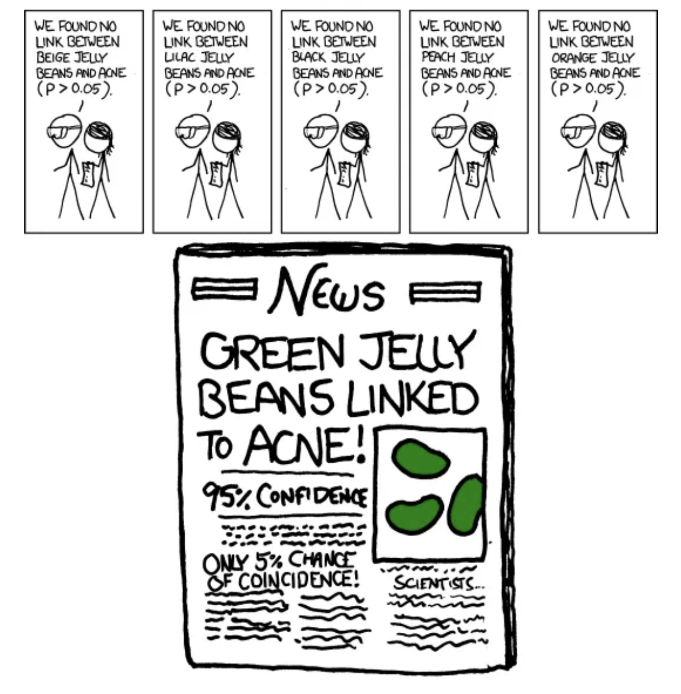

Caution, caveats, digressions
2026-11-11
A 95% CI provides an estimate of a parameter and a measure of uncertainty.
For a two-sided test at \(\alpha = 0.05\):
A 95% CI usually contains all values of the parameter that would not be rejected if it were stated as a null hypothesis and tested with the same data at \(\alpha\).
Thus, CIs and hypothesis tests often lead to the same conclusion.

If the parameter value stated in the null hypothesis falls outside of the 95% confidence interval you estimated, it is almost certain your P-value will be significant at α = 0.05

If the parameter value stated in the null hypothesis falls inside of the 95% confidence interval you estimated, it is almost certain your P-value will be nonsignificant at α = 0.05

Assume \(H_{0}\) states the means are the same.
| a) No overlap of CIs: \(H_{0}\) would be rejected at \(\alpha=0.05\) level. | b) One 95% CI overlaps the sample mean of the other group:\(H_{0}\) would not be rejected at \(\alpha=0.05\). | c) CIs overlap but neither CI includes the sample mean of the other group: we cannot be sure about outcome of mean comparison test. |

Figure from “The Analysis of Biological Data”, 3rd edition, chapter 12. Shows 95% CIs of two estimates.

\[ H_A: p > p_0 \quad \text{or} \quad H_A: p < p_0 \]
We reject \(H_0\) only if the data depart from \(H_0\) in that specified direction.
A one-sided test should be used only if the direction is justified before examining the data.
In most scientific studies, two-sided tests are preferred because effects could plausibly occur in either direction.
Example: A one-sided test in toxicology
Question: Does exposure to a pollutant increase amphibian mortality?
Let \(p\) denote the mortality rate in exposed individuals, and \(p_0\) the mortality rate in controls.
\[ H_0: p = p_0 \] \[ H_A: p > p_0 \]
The alternative is one-sided because the biological concern is an increase in mortality.
A decrease in mortality would not support the claim of toxicity.

Readings:
WS Interleaf 8 (data dredging)
WS Interleaf 10 (publication bias)
Posted on Moodle:
Nuzzo, R (2014). Scientific method: Statistical errors. Nature 506, 150–152. https://www.nature.com/articles/506150a
Halsey L al (2015). The fickle P value generates irreproducible results. Nat Methods 12, 179–185. https://doi.org/10.1038/nmeth.3288
The Americal Statistical Association
P-values can indicate how incompatible the data are with a specified statistical model (aka, the null hypothesis).
Scientific conclusions & business or policy decisions should not be based only on whether a P-value passes a specific threshold.
A p-value, or statistical significance, does not measure the size of an effect or the importance of a result.
By itself, a p-value does not provide a good measure of evidence regarding a model or hypothesis.
Proper inference requires full reporting and transparency.
P-values DO NOT:
They answer a question that you never thought to ask (\(P[\text{data as or more extreme as mine)}|H_{0}]\))
The question we often want to know (\(P[\text{some hypothesis is correct|my data}\)) is not answered by NHST
\(H_{0}\) is usually that in the populations being studied there is zero difference between the means, zero correlation, etc.
People rarely conduct experiments/studies in which it is even conceivable that \(H_{0}\) is true.
Often, one knows before collecting any data that \(H_{0}\) is almost certainly false –the difference or correlation or association in the overall population might be trivial, but it almost certainly isn’t zero.
Clinicians and scientists find it strange to calculate the probability of obtaining results that weren’t actually obtained. The math of theoretical probability distributions is beyond the easy comprehension of most scientists.
Both use sample data to make inferences about the underlying population
CI
Estimation is quantitative: it quantifies, puts a bound on the likely values of a parameter, and gives me the size of the effect
More revealing about the magnitude of the parameter or treatment effects
Does everything hypothesis testing can do
And yet are way less used in biological research
Hypothesis Testing
Hypothesis testing is more qualitative: does the estimated parameter value differ from a null model? Is there any effect at all (yes or no)
Widely used in biology
Decide (yes/no) whether sufficient evidence has been presented to support a scientific claim
They work very well together. Providing P- values and point estimates + CI is currently the best way to go
A Type I error occurs when we reject \(H_0\) even though \(H_0\) is true.
A Type II error occurs when we fail to reject \(H_0\) even though \(H_0\) is false.
Power is the probability of correctly rejecting \(H_0\) when it is false.
There is a tradeoff: decreasing \(\alpha\) generally increases \(\beta\), unless sample size increases.
| Reality | ||
| Conclusion | \(H_0\) True | \(H_0\) False |
| Reject \(H_0\) | Type I error | Correct (Power) |
| Do not reject \(H_0\) | Correct | Type II error |
If \(P > \alpha\), we fail to reject \(H_0\).
This is sometimes described as a nonsignificant result.
We do not conclude that \(H_0\) is true or that \(H_A\) is false.
We conclude only that the data are compatible with \(H_0\).
A nonsignificant result may occur because:
The exact relationship between several features of the experiment: the significance threshold (\(\alpha\)), size of the expected effect, variation present in the population (variance), alternative hypothesis (one or two sided), and sample size.
sample.size <- c(2^(1:9))
tibble(p_reject = c(sapply(sample.size, function(X) {
mean(replicate(1000, unlist(t.test(rnorm(X), mu = 0.3)["p.value"]) <
0.05))
}), sapply(sample.size, function(X) {
mean(replicate(1000, unlist(t.test(rnorm(X), mu = 0)["p.value"]) <
0.05))
}))) |>
mutate(H_0 = factor(rep(c(" False", " True"), each = length(sample.size)),
levels = c(" True", " False"))) |>
mutate(sample.size = rep(sample.size, 2)) |>
ggplot(aes(x = sample.size, y = p_reject, color = H_0)) +
geom_point(show.legend = FALSE) + geom_smooth(se = FALSE,
show.legend = FALSE) + facet_wrap(~H_0, labeller = label_both) +
scale_x_continuous(trans = "log2") + geom_hline(yintercept = 0.05) +
theme_light() + ylim(c(0, 1)) + ylab(expression(Prob. ~ of ~
rejecting ~ null ~ "(" ~ alpha ~ "" == 0.05 ~ ")")) + ggtitle("The probability of reject the null hypothesis") +
scale_color_manual(values = c("#0072B2", "#CC79A7")) + theme(plot.subtitle = element_text(size = 15))
E.g. High powered Genome Wide Association Studies (GWAS) often identify loci associated with negligible increases in the chance of acquiring some disease.
[

">| Important | Not Important | |
|---|---|---|
| Significant | Polio vaccine reduces incidence of polio | Things you don’t care about, or already well known things |
| Not Significant | Suggestive evidence in a small study, leading to future work. OR No support for a thing thought to matter in a large study. | Studies with small sample size and high P-value OR Things you don’t care about. |


Data dredging (also called “data snooping”, “data fishing”, “p hacking”) is the carrying out of many statistical tests in hope of finding at least one statistically significant result. – WS, The Analysis of Biological Data
Perhaps the worst fallacy is the kind of self-deception for which psychologist Uri Simonsohn of the University of Pennsylvania and his colleagues have popularized the term P-hacking; it is also known as data-dredging, snooping, fishing, significance-chasing and double-dipping. – Nuzzo (2014)
“P-hacking is trying multiple things until you get the desired result” –Simonsohn (cointed the term)